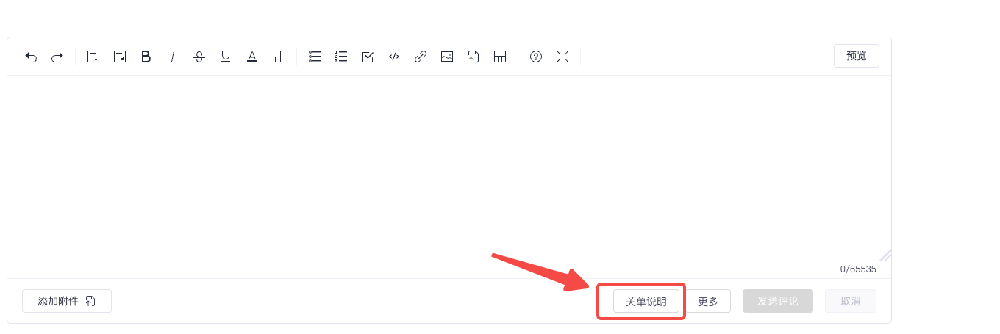
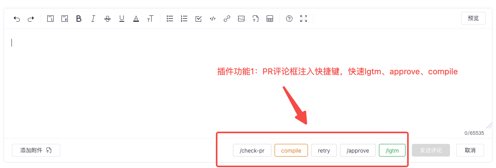

GitCode Quick Comment
GitCode Quick Comment使用指南
安装完成后，打开 GitCode Issue 或 PR 页面验证。完整图文说明见页面底部资源。
装完先验证


按钮没有出现时，先刷新页面，再确认扩展已启用且当前域名是 gitcode.com。
常用操作
- 关单说明：点击「关单说明」，按模板填写必填项，点击「填入评论框」，检查后手动发送评论并添加 resolved 标签。表单支持粘贴或拖入图片，并自动保存本地草稿。
- Issue 更多菜单：直接提交常用标签命令和感谢回复；评论框已有内容时会停止快捷提交。
- PR 快捷评论：/check-pr、retry、/lgtm 直接提交；compile、/approve 默认二次确认后提交。
- 工具栏设置：点击插件图标，可以启用或暂停快捷评论、隐藏和排序按钮，并为每个 PR 命令选择「填入评论框」「确认后提交」或「直接提交」。
常见问题
按钮不显示
刷新页面；到扩展管理页确认扩展已启用且没有报错；确认当前页面是 gitcode.com 下的 Issue 或 PR。安装或更新后，旧标签页需要刷新一次。
「加载未打包的扩展程序」报 manifest 缺失
选择的目录层级不对。请选择直接包含 manifest.json 的那一层文件夹，而不是它的上一级或压缩包本身。
离线包如何升级
下载新版本 zip，覆盖解压目录中的文件，然后回到扩展管理页点击卡片上的刷新按钮。设置和关单草稿保存在扩展本地存储中。
关单说明填入后没有自动提交
关单说明只填入评论框，不会自动发送。请在页面上人工检查后点击「发送评论」。PR 快捷命令的提交方式可以在工具栏设置中调整。
私有仓库读不到模板
插件通过公开原文地址读取 .msbot/ 模板，私有仓库或无法公开访问时会回退到内置表单。需要自定义表单时，请确保模板在默认分支且可公开读取。
更多资料
版本说明
- v1.9：工具栏设置；Issue「更多」菜单支持直接提交标签命令和感谢回复。
- v1.8：PR 快捷评论触发 GitCode 原生提交，compile / approve 二次确认。
- v1.7：关单表单支持粘贴或拖拽图片上传。
- v1.6：优先读取
.msbot/config.yaml指定的模板路径。